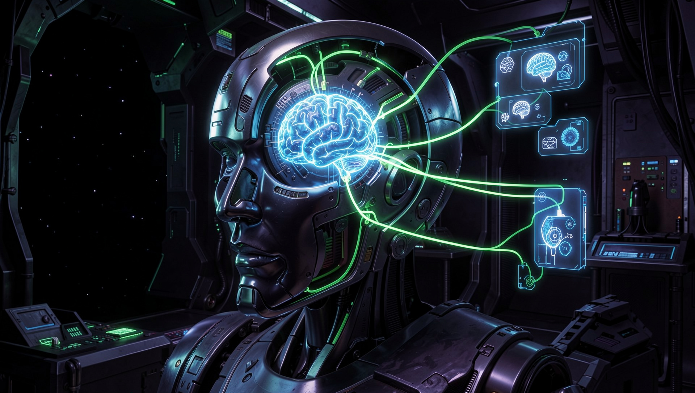

Agentic AI: De responder a ejecutar
Gabriel Emanuel Hernández Espinoza · Cristian Mendoza Tejeda · Fernanda Garrido Vázquez · Rodrigo Israel Morales Jiménez
Noviembre 2026 · Sistemas Inteligentes (1754) La revista se abrirá…¿Qué es un Agente de IA?
En Inteligencia Artificial, un agente es una entidad autónoma capaz de percibir su entorno mediante sensores, procesar esa información y actuar dinámicamente sobre el ambiente a través de efectores para alcanzar objetivos.
Este enfoque transforma los sistemas pasivos en colaboradores capaces de operar en entornos cambiantes.
El ciclo percepción-acción
- Entorno: Contexto y condiciones externas donde opera el sistema.
- Sensores: Mecanismos de entrada que capturan datos del ambiente.
- Agente: Núcleo de razonamiento y toma de decisiones autónomas.
- Efectores: Actuadores o interfaces que modifican el entorno.
Del prompt estático al agente
Los modelos de lenguaje tradicionales (LLM) funcionan bajo un esquema reactivo de pregunta y respuesta. La IA Agéntica rompe esa barrera al dotar al modelo de capacidad de ejecución completa.
| LLM Tradicional (Responde) | Agente Autónomo (Ejecuta) |
|---|---|
| Genera texto pasivo. | Planifica pasos y submetas. |
| Reacciona a un solo prompt. | Usa herramientas externas. |
| Contexto limitado a la sesión. | Conserva memoria persistente. |
Cuatro rasgos agénticos
Para que un sistema computacional sea considerado verdaderamente agéntico, debe integrar cuatro propiedades esenciales:
Un cerebro conectado al mundo

El Cerebro (LLM) actúa como motor de razonamiento general, apoyado por un Módulo de Planificación que divide problemas complejos en pasos manejables.
Para lograrlo, utiliza estrategias como ReAct (razonar y actuar), Chain-of-Thought (CoT) y Tree-of-Thoughts (ToT), permitiéndole autorreflexionar y corregir errores sobre la marcha.
Memoria y Tool Calling
Un agente necesita recordar lo que ha hecho y contar con manos digitales para interactuar con sistemas reales:
- Memoria: Combina el historial inmediato de la sesión con memoria a largo plazo mediante RAG (Retrieval-Augmented Generation) para recuperar experiencias previas.
- Tool Calling: Interfaz que permite al agente invocar APIs externas, navegar en la web, ejecutar código Python o consultar bases de datos relacionales.
Tipos de agentes individuales
- Orientados a tareas: Dividen una meta concreta en subobjetivos secuenciales hasta completarla.
- Orientados a la innovación: Exploran soluciones inéditas, generan código nuevo o apoyan el descubrimiento de fármacos.
- Orientados al ciclo de vida: Aprenden continuamente y se adaptan en mundos abiertos a largo plazo.
Agentes trabajando en red
Los sistemas multi-agente resuelven problemas complejos dividiendo roles especializados bajo tres esquemas de colaboración:
La IA agéntica en el trabajo real
| Sector | Impacto autónomo |
|---|---|
| Software | Escribe, prueba y corrige bugs en código. |
| Finanzas | Detección proactiva de fraudes y soporte 24/7. |
| Logística | Optimiza inventarios y pedidos en tiempo real. |
Autonomía con responsabilidad
Otorgar capacidad de acción a un sistema inteligente exige controles estrictos para mitigar riesgos operativos:
- Desafíos técnicos: Prevención de alucinaciones ejecutables, protección de privacidad y defensa ante inyección de prompts.
Sin gobernanza clara, la velocidad de ejecución puede amplificar errores en segundos.
La próxima interfaz digital
Estamos presenciando una transición histórica en la interacción humano-computadora: pasamos de aplicaciones pasivas donde el usuario opera cada menú, a interfaces orientadas a objetivos.
En este paradigma, las personas definen la intención y las restricciones éticas, mientras redes de agentes coordinan herramientas, verifican resultados y ejecutan flujos completos de principio a fin.
Conclusión y Referencias
La Agentic AI marca el salto del procesamiento de lenguaje a la acción autónoma. Integrar planificación, memoria y herramientas bajo supervisión humana permite construir sistemas eficientes y seguros.
- Rosas Hernández, J. (2026). Sistemas Inteligentes (Grupo 1754). MAC, FES Acatlán, UNAM.
- Amazon Web Services. (2026). ¿Qué son los agentes de inteligencia artificial? AWS.
- Google Cloud. (2026). ¿Qué son los agentes de IA? Definición, ejemplos y tipos.
- IBM & Microsoft. (2026). Arquitectura y casos de uso de agentes de IA.
Fin del artículo
FES Acatlán · UNAM — Licenciatura en Matemáticas Aplicadas y Computación
← Volver a la revista